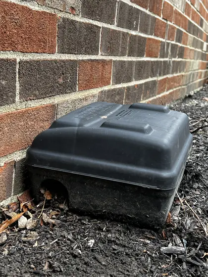
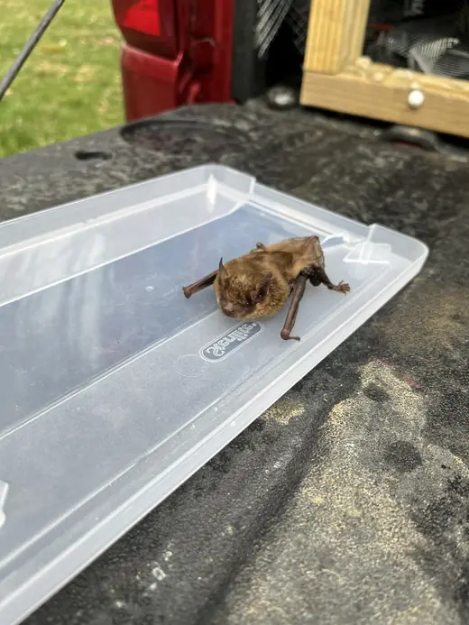
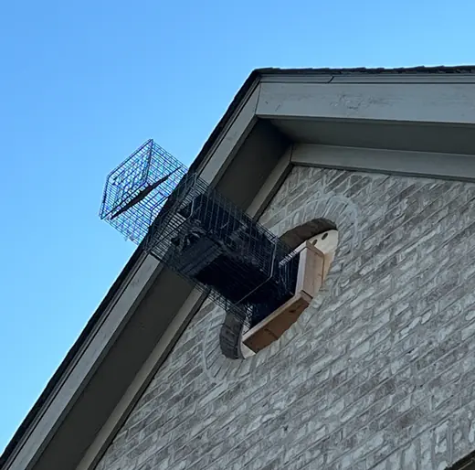
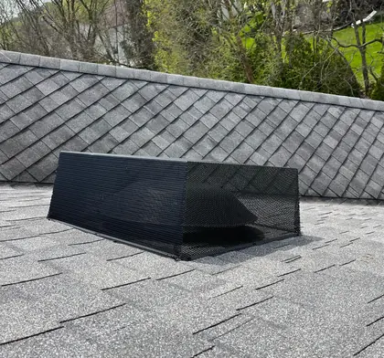

My Critter Pro
Schedule an inspection →
Four ways we solve it.
Mice are one of the most common pests a homeowner can experience. They reproduce year-round and can squeeze through openings about 1/4 inch and larger.
Signs we look for during an inspection:
- Tunneling or nesting in insulation
- Droppings, runways and gnaw marks
- Grease marks and odor
We control mice at a population level, not just one by one.

The most common bat in Ohio homes is the big brown bat. Bats are valuable to agriculture and vulnerable to disease, so professional, humane help matters.
If you have a bat in your home, we capture it so you can submit it to your local health department for rabies testing. We remove bats with one-way exits and seal the entry points.

In some cases we recommend trapping and relocating animals to prevent further damage to your home. Every animal is treated humanely, and every job begins with an inspection.

Exclusion is an effective strategy for bats, squirrels, raccoons, birds, groundhogs, skunks, rats and insects. A squirrel in your soffit, a raccoon in a gable vent, a groundhog under your deck: we provide long-term solutions.
Many exclusions include one-way exits so critters can leave before the final fixes. Call today to get yours started.

Every job starts by looking.
What to expect
We perform a thorough inspection, provide photos of any wildlife evidence, and use the facts we find to put together a plan to solve your problem. Even if your wildlife looks straightforward, an inspection is still necessary.
How to prepare
Know where your access areas are: attic hatches, pipe access panels, crawl space doors. Recording the noise you are hearing can help, but it is not necessary. We bring all the equipment.
"We aren't scared, and you shouldn't be either!"
Jim graduated from Ohio State University with a degree in Wildlife Sciences. After graduating, he worked as a technician for a wildlife control company in Michigan, then followed his dream of becoming a business owner and founded My Critter Pro.
He enjoys the work because it combines his love of meeting new people, working with his hands, and knowledge of wildlife. Jim grew up outdoors, worked on a farm as a young man, and learned home maintenance and construction skills from a builder.
As a specialized wildlife company, My Critter Pro is not spread thin trying to chase every pest in Central Ohio, so it can respond quickly.
Talk to Jim →What customers say on Google.
I called about squirrels getting into my attic, and Jim came out the same day. He thoroughly inspected the situation, set traps, and took the time to explain everything.Samantha W.
Jim, the owner, handled our issue himself, and it truly shows in the quality, care, and professionalism he brings to the process.Sarah P.
Jim and Anthony were great to work with when we had a skunk move in under our front porch! They were upfront about costs, responsive to our texts and calls, and professional from start to finish.RJ E.
Jim came out to inspect our house. Upon evidence of bats in the attic, he set up one way traps to evacuate them safely and sealed up all potential entry points. Jim was respectful, professional.Jamie L.
A friend of ours recommended My Critter Pro, and I was very pleased with the entire experience. I highly recommend Jim and My Critter Pro.Paula C.
Central Ohio, around Columbus.
Service areas are approximate. Please call 614-230-1520 if you are in or near our area.
We offer trapping, animal exclusion, mouse and bat services across the region.
Hours: Monday to Sunday, 8 AM to 6 PM.
Schedule an inspection.
If you would like a fast response, please call or text. Otherwise, fill out the form and we will get back to you, usually within 24 hours.
614-230-1520